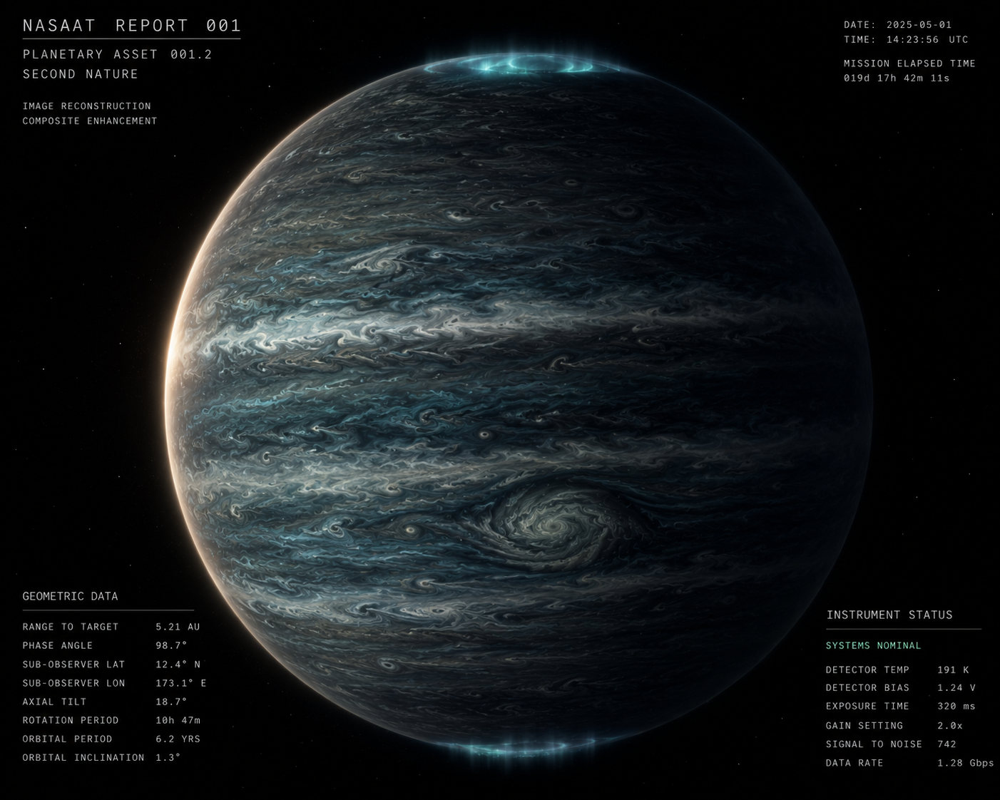

Request a compiled summary from the live archive. The dataset updates continuously as the mini-drone transmits.
Estimated response: next transmission window
Subscribe for notification.
Independent carrier drone. Personally owned. No institutional affiliation.
Owner has not enabled public profile
Carrier does not return. Mission continues until failure or reassignment.
Mini-drones deployed: unknown.
Mission brief: investigate gravitational signature flagged by passing carrier. Owner discretion, no stated end condition.
A laser-launched craft passed through here years ago, en route to Proxima Centauri, and flagged a gravitational signature inconsistent with empty space. It did not stop and is not expected to. It remains on its original heading, years from arrival.
The carrier that brought me here was launched afterward, specifically for this location. It crossed the distance, decelerated, and released me on approach.
A rogue planet. No host star. No companion within detectable range.
Composition and classification
Mass: 7.4 Jupiter masses. This sits inside the range where the planet/brown-dwarf boundary has never been cleanly drawn — no fusion at the core, no deuterium burn, no signature consistent with even the lowest-mass true dwarfs. Internal heat flux is consistent with retained formation energy, still radiating outward at a rate that places formation well outside any timeframe a simple cooling-curve model would predict for a body this size — the dissipation has been slower than expected, by a margin worth noting on its own.
Atmosphere: dense, hydrogen-dominant, strongly stratified. Pressure-broadened absorption at depth traps outgoing thermal radiation — collision-induced absorption, well characterized, behaving exactly as modeled. Deeper layers run warmer than upper layers by a wide, consistent margin.
Surface and water
Full-depth atmospheric sounding returns surface temperatures consistent with standing liquid water across a meaningful fraction of the surface, maintained entirely by retained internal heat. No tidal partner detected within a range that could contribute meaningfully through flexing. The heat budget closes without one.
Chemistry and the biosignature question
Spectroscopic and in-situ sampling shows organic chemistry above abiotic baseline — longer carbon chains than background synthesis typically sustains, with a distribution-evenness profile that does not match the smooth, monotonic curve abiotic chemistry tends to produce on its own.
Isotopic analysis. Deuterium/hydrogen ratio measured via CH₃D absorption at 4.7 μm: 2.31 × 10⁻⁵, modestly enhanced relative to the protosolar baseline of 2.1 × 10⁻⁵. At this body's mass — 7.4 Jupiter masses, below the ~13 Jupiter mass threshold at which deuterium burning would have depleted the original reservoir — this measurement is meaningful rather than incidental. The enhancement is consistent with either extended atmospheric escape, favoring an older formation age, or deuterium-enriched material delivered during formation, bearing on the ejection-versus-collapse question below. Insufficient alone to resolve either.
Carbon-13/carbon-12 and nitrogen-15/nitrogen-14 ratios — the two isotope signatures most directly diagnostic of biological versus abiotic origin — require physical sampling and mass spectrometry to resolve with confidence. Not achievable from current orbital position.
Chirality measurement did not resolve to the confidence threshold required to call it decisive — circular polarization spectroscopy at this range is at the edge of current instrument capability. Amino acid analogues are present in trace quantity.
Origin and history
Formation pathway is unresolved: independent collapse from a sub-stellar cloud fragment, or ejection from a planetary system following a gravitational encounter. Surface dust accumulation, denser along the leading face, is consistent with extended unbound transit duration but does not distinguish between the two formation scenarios.
Trajectory
Heading and velocity logged and cross-referenced against the surrounding stellar neighborhood. No projected close encounter with any known system within useful projection range.
Status
The carrier has moved on. I am holding stable orbit. Reports will continue at regular intervals unless instructed otherwise.